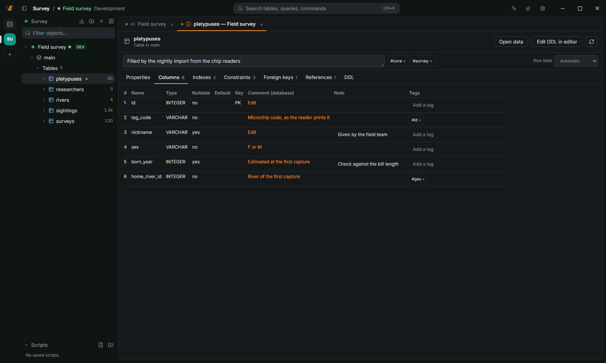

Features
The whole toolbox,
none of the weight.
Write and run SQL, edit data, read query plans, design schemas and move data between databases, from one small window.
See it work
From the first query to production.




SQL editor
Write it once, run it anywhere.
An editor that knows your schema and remembers what you ran.
Completion from the schema
Tables, columns and whole JOINs, completed from the foreign keys with the alias and the ON condition.
Statement or script
Ctrl+Enter runs the statement under the cursor, Alt+X the whole script.
2keys
Parameters
:name and ? placeholders, asked before running and remembered.
History
Every query you ran, with its time, rows and errors, searchable.
Notebooks
Queries and notes in one document; results are kept with it.
Data
See and change rows without writing SQL.
A million rows, no wait
A canvas grid that reads a page at a time.
178fps
Edit, then save all or nothing
Changes are collected in the grid, shown as SQL and saved in one transaction. Every save leaves an undo script.
The value, in full
JSON, XML, images and points on a map in a panel beside the grid.
Charts and pivots
From any result, without leaving the tab.
Schema
Know the schema, change it safely.
A table editor that shows its SQL
Add and change columns, indexes and keys; the ALTER TABLE is shown before it runs.
Notes and tags
The database's own comments, your notes and tags on every table and column.
ER diagram
Drawn from the foreign keys, laid out for you, exported to PNG or SVG.
Docs in one file
The whole schema as one HTML page with its diagram.
Compare and migrate
Two schemas side by side, and the script that makes one like the other.
Performance
See why a query is slow.
Explain analyze, rolled back
Runs the statement for real times, rolls back what it changed, tints each step by its share of the time and suggests an index.
Server activity
Sessions, locks and the chain of who waits for whom; cancel a statement from there.
Safety
Production stays production.
Colors you can't miss
The window frame and the tab take the connection's color.
Manual commit on production
Production opens in manual commit and confirms every change before it runs.
Read only, for real
Writes are blocked by the client, not only by the grants. Passwords stay in the keychain.
Import and export
Move data anywhere.
Files in and out
CSV, JSON, Parquet and Excel, streamed to disk or to S3.
Between databases
Copy a table or a whole schema from any database to any other.
Agents and CLI
Ready for agents, read only by default.
An MCP server and a command line
Every MCP client can use your saved connections. Each connection says what agents may do, and every call is logged in the app.
You approve the writes
Writes wait for your confirmation in the app, per connection.

All of this in 19.5 MiB.
Free and open source. No trial, no account.